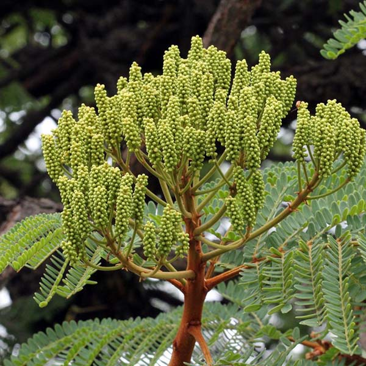

Guerra dos canudos
Para entendermos de onde surgiu esse nome temos que voltar para o século 19. Entre 1896 e 1897 ocorreu uma das mais tristes histórias do nosso país, o massacre de canudos; no interior do sertão da Bahia, uma vila, conhecida como canudos e que já agrupava cerca de 20 mil pessoas começou a incomodar a recém república do Brasil. A vila, como era autosuficiente e escancarava a ineficiência do estado perante os mais necessitados, foi taxada como uma revolta que queria a volta da monarquia, mas o principal motivo nos bastidores era o não pagamento de imposto dos moradores.
A revolta teve fim em 1897, sendo uma das maiores chacinas em nome do estado e colocando ponto final na vida de milhares de pessoas que só queria uma vida melhor.
Morro da Favela
Durante as investidas do estado contra a revolta, foram usados alguns canhões de artilharia pesada da época para matar seu próprio povo, estrategicamente os canhões deveriam ser colocados no alto para melhor aproveito deles, então foram levados para um morro próximo a vila de Canudos, um morro cheio de favelas, mas não essas que conhecemos hoje, mas sim árvoes.
Favela originalmente é o nome se dado a uma árvore espinhenta, lactescente e com pelos urticantes, de 4-8 m de altura, dotada de copa alongada ou arredondada e rala, nesse morro havia várias dessas favelas.

Mas afinal, como chegamos na favela que é conhecida hoje?
O estado brasileiro, antes de enviar os soldados para combater a revolta, havia prometido a eles que, quando voltassem, todos ganhariam terreno e casa para morar, como a maioria eram ex escravos, foram e voltaram no ânseio do novo lar, porém ao voltarem para o RJ, até então capital do Brasil, foram completamente ignorados pelo estado e ignorados sobre a promessa do novo lar. Sem dinhiero e sem ter para onde ir, muitos deles subiram um morro que ficava ao redor do Rio de Janeiro, o morro da providência, onde lá já haviam algumas pessoas foragidas por outros motivos, chegando lá os soldados logo se familirizaram com o local, pois era parecido com o morro da favela que guerriaram recentemente. E foi assim que foi popularizado o nome Favela.
Temas abordados
- Favela
- Guerra de Canudos
- Brasil
- História do Brasil